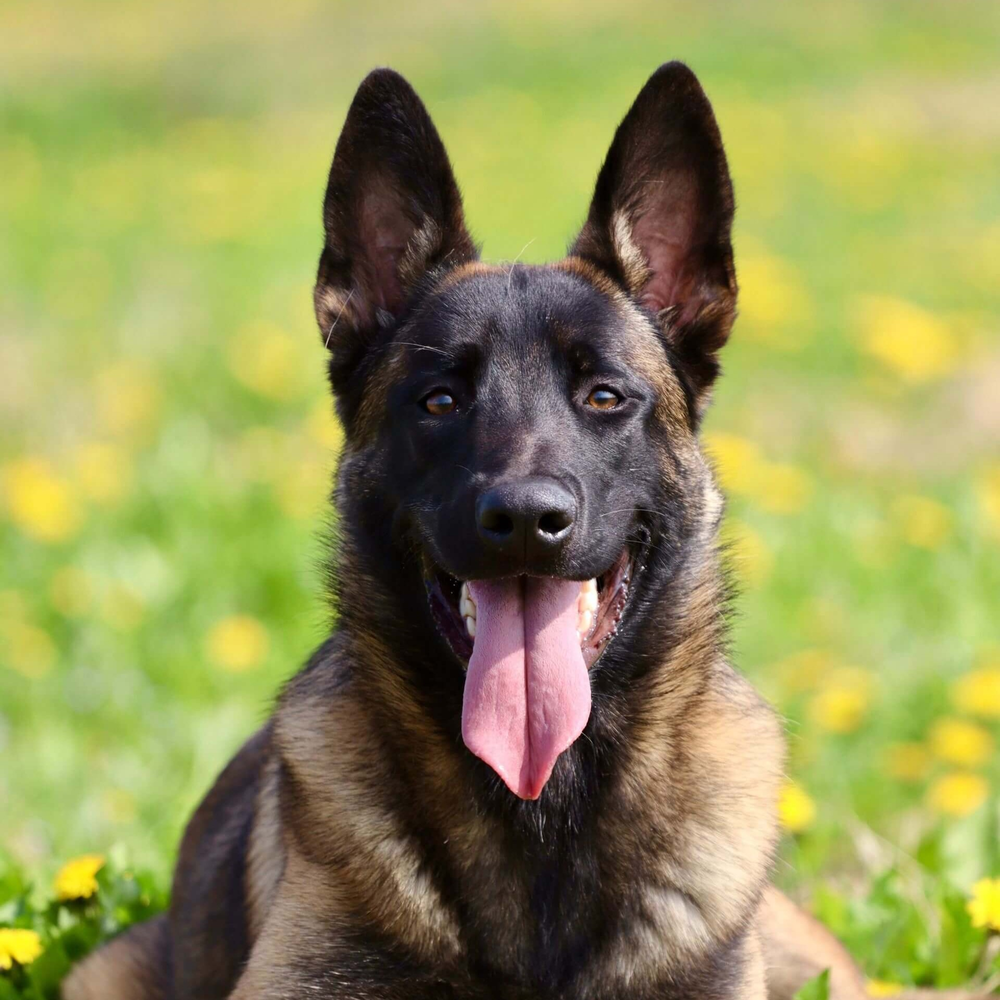
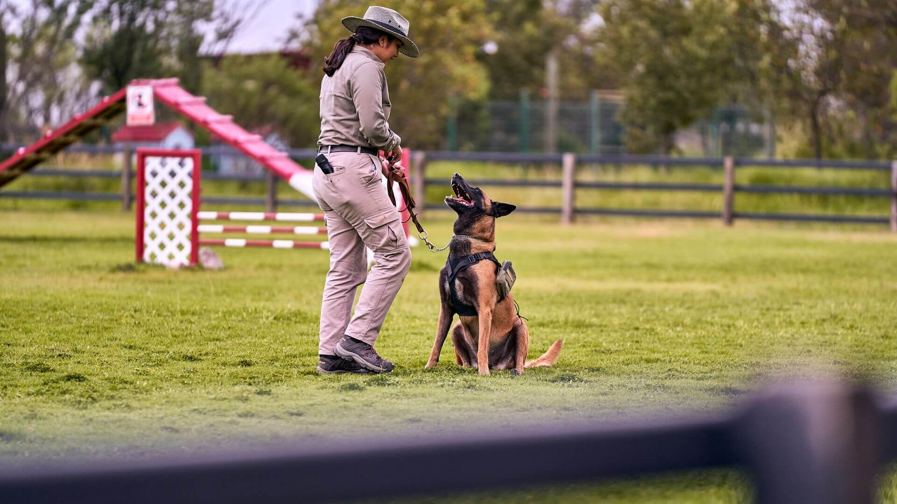
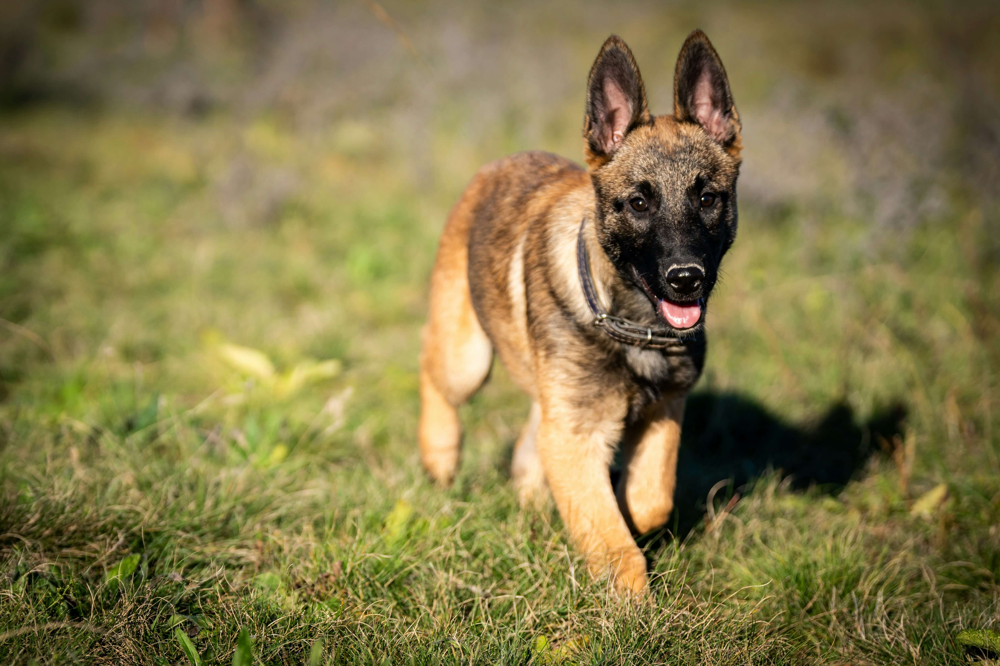
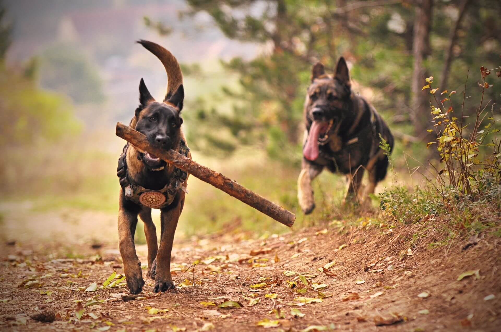

Бельгийская овчарка
Умная, чуткая и неутомимая рабочая собака. Бельгийская овчарка объединяет четыре разновидности, которые делят общий живой характер, но различаются шерстью и окрасом.

- Вес
- 20–30 кг
- Рост в холке
- 56–66 см
- Жизнь
- 12–14 лет
- Энергия
- Очень высокая
- Линька
- Умеренная
Характер
Бельгийская овчарка появилась в конце XIX века, когда в 1891 году профессор Адольф Рийул взялся упорядочить пёстрое разнообразие пастушьих собак Бельгии и свести их в единую национальную породу. Так сложилась порода, объединившая четыре разновидности, которые различаются шерстью и окрасом, но делят общий живой и работящий характер. От пастушьих корней бельгийцу достались острый ум, неутомимость и потребность всё время быть при деле рядом с человеком.
Это собака необычайно умная и чуткая, которая ловит малейшую перемену в настроении хозяина и тонко на неё отзывается. Бельгийская овчарка крепко привязывается к своей семье, а чаще всего к одному человеку, и нуждается в постоянном контакте и общих занятиях. Без дела и внимания она тоскует и может начать искать выход энергии не самым удобным для дома образом, поэтому ей важны нагрузка, обучение и ощущение собственной нужности.
К незнакомцам бельгиец относится настороженно, и в нём силён инстинкт защитника, поэтому ранняя и терпеливая социализация особенно важна. При правильном воспитании из него вырастает уравновешенный и надёжный компаньон, а вот резкость и давление эта чувствительная собака переносит плохо и отвечает на них замкнутостью. С детьми своей семьи бельгийская овчарка ладит и даже опекает их, мягко проявляя свою пастушью натуру.
Отдельно стоит сказать о её рабочем азарте, ведь именно благодаря ему бельгийцы, и прежде всего малинуа, служат в полиции, спасении и на таможне по всему миру. Эта порода счастлива, когда у неё есть задача, и отвечает человеку, готовому разделить с ней деятельную жизнь, безграничной преданностью и удивительным взаимопониманием.
Четыре разновидности
Бельгийская овчарка уникальна тем, что существует в четырёх обличьях. По классификации FCI это одна порода, а её разновидности различаются типом шерсти и окрасом. Выберите любую, чтобы рассмотреть поближе.

Малинуа
Характеристики
Размер
Среднекрупная, но лёгкая и подвижная собака. Рост в холке от 56 до 66 сантиметров, вес от 20 до 30 килограммов. В отличие от немецкой овчарки, бельгиец суше и спортивнее.
Шерсть
Зависит от разновидности: от короткой у малинуа до длинной у тервюрена и грюнендаля и жёсткой у лакенуа. Линяет умеренно, а у длинношёрстных типов заметнее.
Энергия
Очень высокая. Это собака-трудоголик, которой нужны серьёзные нагрузки, долгие прогулки и задачи для ума каждый день, иначе она томится без дела.
Обучаемость
Выдающаяся. Бельгиец схватывает новое мгновенно и обожает работать с человеком, но его чувствительность требует мягкого и последовательного подхода без грубости.
Отношение к детям
С детьми своей семьи ласкова и внимательна, проявляет мягкий пастуший инстинкт опеки. Лучше всего раскрывается там, где дети уже подросли и активны.
Здоровье
Бельгийская овчарка считается крепкой и здоровой породой, но как у любой рабочей собаки у неё есть наследственные особенности, о которых полезно знать. Ответственные заводчики проверяют здоровье родителей, поэтому щенка лучше брать именно у них.
Дисплазия суставов
Как у многих овчарок, тазобедренные и локтевые суставы могут развиваться не идеально, что со временем сказывается на лёгкости движений. Проверка здоровья родителей, контроль веса и разумные нагрузки в щенячестве заметно снижают риск.
Дегенеративная миелопатия
Возрастная особенность нервной системы, которая в зрелые годы может проявляться лёгкой неловкостью задних лап. Есть генетический тест на предрасположенность, а поддерживающий уход и крепкая мышечная форма помогают собаке дольше оставаться активной и бодрой.
Зрение
Иногда встречаются наследственные особенности глаз, например постепенные изменения сетчатки. Регулярный осмотр у ветеринара и выбор щенка от проверенных родителей помогают вовремя позаботиться о здоровье глаз.
Кому подходит
Бельгийская овчарка создана для активного, опытного человека, который готов сделать собаку полноправным участником своей жизни. Это идеальный партнёр для тех, кто увлекается кинологическим спортом, дрессировкой или просто проводит много времени в движении и на воздухе. Бельгиец расцветает рядом с хозяином, который ценит ум, азарт и тесную связь со своей собакой.
Лучше всего этой породе живётся с человеком спокойным, последовательным и уверенным, способным стать для чуткой собаки мягким, но ясным лидером. Бельгийская овчарка отвечает на доверие глубокой преданностью и привязывается всем сердцем, часто особенно сильно к одному члену семьи. Ранняя социализация и терпеливое воспитание раскрывают её лучшие качества.
А вот для спокойного, домашнего образа жизни без особых нагрузок эта порода не подойдёт, и новичку с ней тоже будет непросто. Без работы для тела и ума бельгиец тоскует, и его энергия находит не самый удачный выход. Но рядом с человеком, готовым разделить деятельную жизнь, он раскрывается как невероятно умный, преданный и чуткий друг, о котором можно только мечтать.
Бельгийская овчарка в жизни


